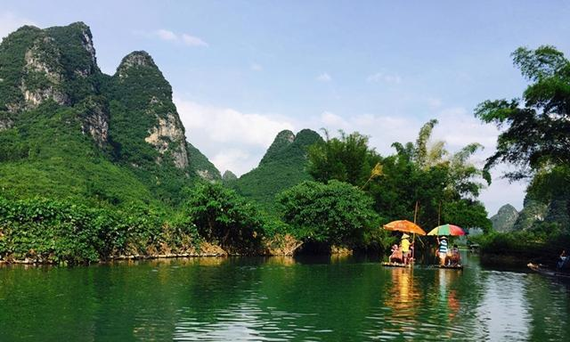

Добро пожаловать в туристическую сеть Гуйлиня~
Добро пожаловать в туристическую сеть Гуйлиня~
издатель:爆改C计划время:2020-08-17
Яншо, расположенный на юге Гуйлиня, является уездным городом с более красивыми пейзажами, чем Гуйлинь. Он расположен в низовьях реки Лицзян.Зеленые горы и зеленые воды также контрастируют друг с другом вдоль реки Лицзян.Галерея Шили является самой красивой частью этого пейзажа.Посетив это место,многие туристы думают,что она красивее, чем река Лицзян в верховьях Гуйлиня.Большой разрез. И древний город Синпин в Яншо также является обязательной достопримечательностью.Причудливый город под закатом - редкое воспоминание о путешествии по Яншо. Кроме того, излюбленная иностранцами улица Yangshuo West Street полна экзотических вкусов и привлекает туристов издалека и ближнего зарубежья. Итак, о Яншо, насколько он прекрасен? Давайте взглянем на 3 характерные красоты Яншо, одна выглядит на 20 юаней, а другая стимулирует рафтинг.
Если вы хотите спросить, где самое красивое место в Яншо, первое, что приходит вам на ум, это, наверное, древний город Синпин. Древний город Синпин, напечатанный на 20-юанях моей страны, является самым аутентичным и причудливым городом в Яншо. Этот город с историей в сотни лет, прогуливаясь по причудливым улочкам какое-то время, может заставить людей ощутить всю прелесть того, что он испытал на себе превратности истории. Гладкие плиты голубого камня под ногами рассказывают об истории этого города, а старые дома по обеим сторонам рассказывают нам о следах прошедших на них лет. Вид этих причудливых зданий заставляет людей чувствовать душевное спокойствие. А красивейшие пейзажи древнего города все еще под лучами заходящего солнца, древний город словно покрыт золотой пеленой, словно девушка, ждущая слова, что приводит людей в восторг.
Если пройти вдоль реки Лицзян от древнего города до пристани Синпин, то можно увидеть отражение желтой ткани, где проходила наша съемка за 20 юаней. В дополнение к отражению желтой ткани поблизости есть также живописные места, такие как Гора Девяти Лошадей, Я думаю, что все будут полны похвал за здешние пейзажи после того, как приедут сюда.
Если древний город Синпин — самое красивое место в Яншо, то рафтинг по реке Юлонг — самое интересное занятие в Яншо. Рафтинг здесь - это не тот захватывающий рафтинг, в который все обычно играют на байдарках, а сплав по реке Юлун, взяв на себя бамбуковый плот, и спустившись по реке, чтобы насладиться пейзажами реки Ли и галереей Шили. Здесь мы должны сначала принять меры предосторожности. Будучи притоком реки Лицзян, река Юйлун не такая зеленая и чистая, как река Лицзян. Вместо этого она выглядит грязной и желтовато-коричневой. и реки Лицзян встречаются, есть четкая сцена. Я думаю, что каждый, кто долгое время жил в городе, будет восклицать, увидев эту сцену.При групповом фото следует обратить внимание на безопасность на бамбуковом плоту!
Западная улица Яншо, известная как «улица иностранца», является крупнейшим уголком иностранных языков в Китае и редким местом в Китае. На этой 1400-летней старинной улице, помимо причудливых зданий в китайском стиле, расположены также различные рестораны, бары, интернет-кафе и так далее. Кроме того, вывески и меню ресторана на китайском и английском языках, владелец и официант свободно говорят по-английски, что заставляет многих пользователей сети шутить, что без 4-го уровня английского языка они не могут быть официантами. Здесь китайская и иностранная культуры были интегрированы в одну функцию, и в основном не так много региональных различий. Можно сказать, что это одно из чудес света.